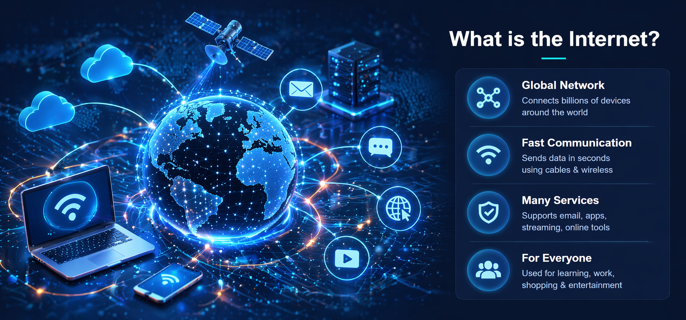
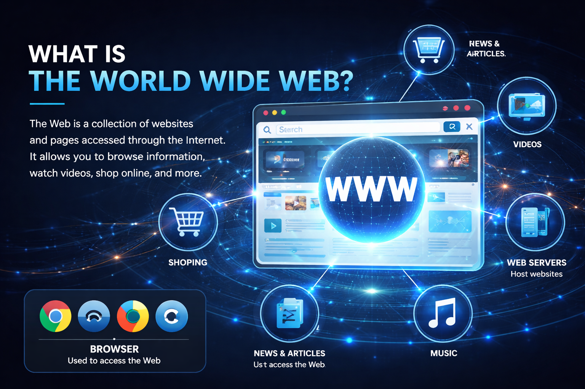
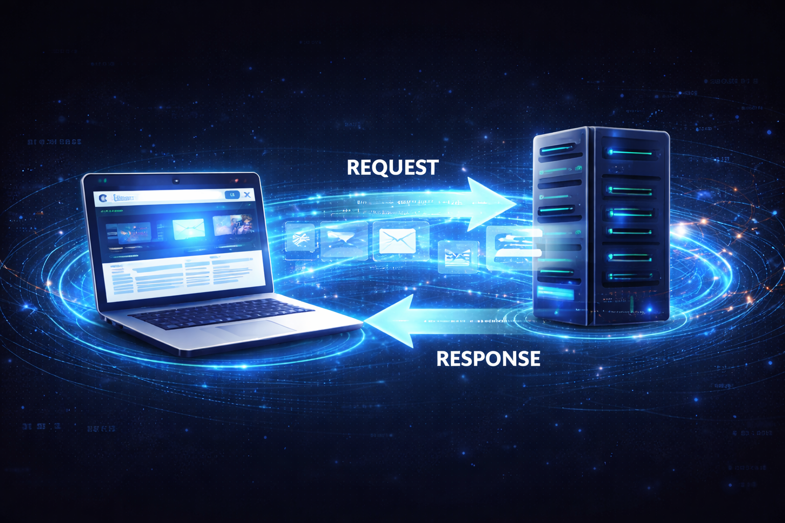

Introduction
The Internet and the World Wide Web are very important parts of modern life. Today, people use them almost every day in different ways. Students use them to study, search for information, and complete assignments. Workers use them to send emails, attend meetings, and share files. Families also use them to stay in contact with each other even when they are far away. In addition, many people use them for entertainment such as videos, music, and games. Because they are used so often, many people think the Internet and the Web are the same thing. However, this is not true because each one has a different meaning and role. The Internet is the system that connects devices around the world. The Web is one of the services that works through that system. Learning about both of them helps us understand technology better. It also helps us become smarter and safer users in everyday life.
What is the Internet

The Internet is a huge global network that connects millions of devices together. These devices can be computers, phones, tablets, servers, and smart machines. The Internet allows them to exchange information in a very short time. It works through cables, fiber optics, satellites, and wireless signals. When people send messages or open online pages, the Internet carries the data. It is the main system behind emails, apps, games, and video streaming. Without the Internet, devices would not be able to communicate on a worldwide level. It does not belong to one person or one company only. Instead, it is made of many networks linked together across different countries. Each device connected to it has a special address to send and receive data. This makes communication organized and possible between different users. In simple words, the Internet is the foundation of online communication.
What is the World Wide Web

The World Wide Web, also called the Web or WWW, is a collection of websites and web pages. People access these pages through the Internet by using a browser. Common browsers include Chrome, Edge, Firefox, and Safari. When someone types a website address and opens a page, they are using the Web. The Web includes text, images, videos, links, and many other forms of content. It helps people find information easily and move from one page to another. Websites are stored on computers called servers and sent to the user when requested. The Web is one of the most popular services that uses the Internet. This means the Web depends on the Internet in order to work. It is the part that users usually see directly on their screens. Because of that, many people confuse it with the Internet itself. In reality, the Web is only one part of the larger Internet system.
Difference Between Internet and WWW
The Internet and the World Wide Web are closely connected, but they are not the same thing. The Internet is the global network that connects devices and allows data to travel. The World Wide Web is a service that uses this network to show websites and pages. A simple example is to think of the Internet as roads and the Web as the places you visit. The roads help you move, but they are not the same as the buildings and destinations. In the same way, the Internet carries information while the Web shows content to users. The Internet can also support other services besides the Web. For example, email and online file transfer also use the Internet. This proves that the Web is only one part of a bigger system. Many people mix the two names because they use the Web every day. However, knowing the difference is important in understanding technology correctly. So, the Internet is the connection, while the Web is the content people access.
How the Internet Works
The Internet works by moving data from one device to another across many networks. When someone sends a message or opens a website, the data is divided into small packets. These packets travel through different paths until they reach the correct destination. Special devices called routers help direct the packets along the best path. When all the packets arrive, they are put back together in the correct order. This allows the user to see the full message, page, or video properly. The process happens very quickly, often in only a few seconds. The Internet follows special rules called protocols to organize communication. These rules help different devices understand each other correctly. Because of these protocols, devices from different companies can still connect. The Internet can work over cables, wireless systems, and even satellite connections. All of this makes online communication possible in a fast and organized way.
How the Web Works

The Web works when a person opens a browser and enters a website address. The browser then sends a request to a server where the website is stored. A server is a computer that keeps website files and sends them when needed. After receiving the request, the server sends the page data back to the browser. The browser reads that data and displays the page on the screen. This is why users can see text, pictures, videos, and links on a website. If the user clicks another link, the same process starts again. The Web uses a system called HTTP or HTTPS to transfer page data. This system helps the browser and the server communicate correctly. The whole process usually happens very fast, so users do not notice the steps. Thanks to this system, people can search, read, shop, and learn online easily. In short, the Web works through cooperation between the browser, server, and Internet.
Uses of the Internet
The Internet is used in many different areas of daily life. One of its main uses is communication through emails, chats, and video calls. People can talk to family members and friends from different countries in seconds. Students use the Internet for research, homework, and online learning platforms. Teachers also use it to share lessons, files, and educational videos. Businesses depend on it for advertising, customer support, and online meetings. Many people also use the Internet for entertainment like movies, music, and games. Online shopping is another common use because people can buy products from home. Banks and companies also provide services through the Internet. News websites and social media help people stay informed and connected. Because of all these uses, the Internet has become necessary in modern life. It saves time, gives access to information, and connects people around the world.
Advantages and Disadvantages
The Internet has many advantages that make life easier for people. It gives fast access to information from different parts of the world. It also makes communication easier and quicker than in the past. Students can learn more easily, and workers can finish tasks online. Businesses can reach more customers and grow through online services. However, the Internet also has some disadvantages and risks. There is false information online, and not every source is trustworthy. Some people may face privacy problems, scams, or hacking attempts. Spending too much time online can also affect health and daily habits. In some cases, people may become too dependent on the Internet. Because of this, users should be careful and think before trusting everything online. The best way is to use the Internet in a smart, safe, and balanced manner.
Conclusion
In conclusion, the Internet and the World Wide Web are very important in the modern world. They help people communicate, learn, work, and enjoy entertainment every day. The Internet is the large network that connects devices across the world. The Web is a service that allows people to access websites and online information. Even though many people confuse them, they are not exactly the same thing. Understanding the difference between them helps people understand technology better. It also helps users know how online communication and websites really function. Both the Internet and the Web have changed daily life in many positive ways. They support education, business, communication, and many useful services. At the same time, people should use them carefully because there are some risks. Safe and balanced use is important for getting the best benefits from them. As technology continues to grow, both the Internet and the Web will remain essential.